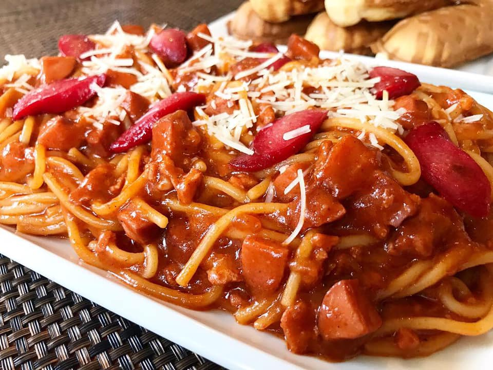

INGREDIENTS
- 1 lb. spaghetti noodles
- 1 tbsp. oil
- 4 Filipino-style hotdogs, sliced diagonally
- 3 cloves garlic, peeled and minced
- 1 bell pepper, seeded, cored and chopped
- 1 lb. ground beef
- 2 cups tomato sauce
- ½ cup tomato paste
- 1 cup banana ketchup (preferably sweet and spicy)
- 1 cup beef broth
- 1 tsp. sugar
- ½ cup quick-melt cheese, shredded
|

|
PROCEDURE
- Cook the spaghetti noodles according to package instructions until al dente. Drain and set aside.
- Heat oil in a pan over medium heat. Add garlic and bell pepper, cook for 2-3 minutes until softened.
- Heat oil in a pan over medium heat. Add garlic and bell pepper, cook for 2-3 minutes until softened.
- Add ground beef and cook until browned, breaking into small pieces. Drain any excess fat.
- Add tomato sauce, tomato paste, banana ketchup, and beef broth. Stir well and bring to a boil.
- Reduce heat to low, cover, and simmer for 30 minutes, stirring occasionally. If the sauce becomes too thick, add water in ¼ cup increments.
- During the last 10 minutes of simmering, add the sliced hotdogs and season with salt and pepper to taste.
- Toss cooked spaghetti with the sauce, then top with shredded cheese and serve.
|